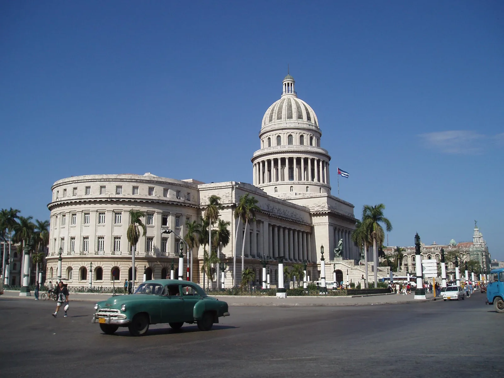

Kuba - put u prošlost
Iako su ritmovi ovog najvećeg karipskog otoka razapetog između ostataka hladnoga rata i neminovne modernizacije već odavno osvojili našu svakodnevicu, prava se Kuba, nenašminkana i neuređena (no daleko zanimljivija) i…

Iako su ritmovi ovog najvećeg karipskog otoka razapetog između ostataka hladnoga rata i neminovne modernizacije već odavno osvojili našu svakodnevicu, prava se Kuba, nenašminkana i neuređena (no daleko zanimljivija) i dalje vješto skrivala iza omamljujućih taktova salse i širokih osmjeha kubanaca s nezaobilaznom cigarom u kutu usana. Vrlo je lako bilo probuditi našu radoznalost: pokoja priča, mnoštvo fotografija i već smo se nestrpljivo pripremali za speleološku ekspediciju «Cuba 2004/05». Tropski krš kojim je prekriven veliki dio otoka i 11.000 registriranih speleoloških objekata s više od 450 km kanala obećavali su nezaboravno speleološko iskustvo.
Nakon višemjesečnih priprema i dvanaest napornih i turbulentnih sati provedenih u avionu sletjesmo u Havanu, a umjesto hladnog zimskog ugođaja i predbožićnog raspoloženja karakterističnog za prosinac zapuhnuo nas je topao i sparan zrak havanskog aerodroma. Iako nam je sudbina dozvola za speleološka istraživanja bila nepoznata do samoga dolaska, na carini su uslijedila tek uobičajena pitanja o smještaju, provjera podataka i vrata u svijet salse, ruma i najpoznatijih cigara na svijetu širom su se otvorila.La Habana hermosa
Prvi susret s Kubom većini posjetitelja svakako je San Cristóbal de la Habana ili samo Havana, životna i temperamentna, privlačna usprkos oronulim fasadama i neuređenim ulicama. Grad je 1515. godine osnovao španjolski konkvistador Diego Velásquez de Cuéllar, nekoliko desetaka kilometara južnije od današnje lokacije, na obalama Karipskoga mora (današnji Batabanó) da bi se tek četiri godine kasnije preselio sjevernije, na obale Atlanskog oceana. S preko dva milijuna stanovnika najveći je grad na Kubi i ujedno njeno političko, kulturno i industrijsko središte, podijeljeno na 15 općina (municipios) od kojih su nas, kao i mnoge prije nas, privukle tri najstarije i najživopisnije: Habana Vieja – povijesno srce grada omeđeno gradskim zidinama ranog kolonijalnog naselja s jedne te obalom havanskog zaljeva (Bahía de la Habana) s druge strane; Centro Habana – gradski centar koji se tek u devetnaestom stoljeću počeo širiti van starih gradskih zidina, a danas je poznat po monumentalnim građevinama i ugodnoj hladovini promenade Prado (Paseo de Martí) te Vedado – općina u kojoj je gradnja bila zabranjena do kraja devetnaestog stoljeća (vedado = zabranjeno) da bi danas izrasla u politički i kulturni centar Havane.
Život u Havani isprva nam se otkrio kao i svakom turistu: egzotičan, topao i začinjen mnogobrojnim orkestrima na terasama restorana i barova u centru grada, slatkastim koktelima i neuhvatljivim koracima kubanskih plesača. Ulice staroga grada (Habana Vieja) muzej su na otvorenom koji se, umjesto u strogo čuvanim zatvorenim prostorijama, hedonistički kupa na suncu i uživa u mirisima i zvukovima koji dopiru s njenih ulica. Popiti kavu kojom se kubanci toliko ponose na jednoj od terasa te uz miris vješto zarolane cigare uživati u ležernosti svakodnevice poseban je doživljaj koji savršeno odgovara romantičnoj predodžbi karipskoga raja oslobođenog stresa i jurnjave.
No ispod tako lijepo oslikane površine krije se i druga Havana – Havana neuređenih i prljavih ulica na kojima su prosjačenje, preprodaja i prostitucija tužna stvarnost, a siromašna se svakodnevica odvija svojim uobičajenim ritmom ne obazirući se isuviše na vrijeme koje kraj nje galopira. Međutim, čak i takva odiše neodoljivom posebnošću. Pročelja kuća kojima su vrijeme i nestašica odavno sakrili prvotnu ljepotu i prijete potpunim urušavanjem djeluju avetski, no temperament njihovih stanovnika čine grad nevjerojatno živim i pulsirajućim. Život se ovdje ne odvija unutar četiri zida već na samim ulicama, uz zvuke nezaobilazne salse i reaggetona i škripe pokojeg old-timera. Priče o glazbi i plesu na svakome uglu utemeljene su i nimalo pretjerane. Brojni ulični i restoranski bendovi koji po kvaliteti zasigurno ne zaostaju za već renomiranim kubanskim glazbenicima nikoga ne ostavljaju ravnodušnim. Ples je sastavni dio svakodnevice pa ne začuđuje njihova vještina i muzikalnost koju ukočene pridošlice poput nas mogu samo zavidno promatrati i nevješto imitirati, što smo jednom prilikom i pokušali tijekom kratkog tečaja salse u dnevnom boravku oronulog havanskog stana u blizini Prada.
Prvi susret s Majaguas-Canteras sustavom
Četiri dana nakon dolaska u Havanu sjedimo spakirani i spremni za polazak, nestrpljivo iščekujući autobus koji će nas odvesti do obećanih kilometara podzemnih kanala Majaguas-Canteras sustava u najzapadnijoj provinciji Kube – Pinar del Río. Iako udaljen tek 200 km od Havane, put do sustava traje nekoliko dugih sati zbog čestih stajanja kojima su najčešći uzrok oštećene ceste i mostovi zbog kojih je dijelove puta valjalo proći pješice. Penjački dio ekspedicije napušta nas u Viñalesu, omanjem mjestašcu okruženom mogotama, koje se tijekom posljednjih godina iz oaze mira i spokoja transformiralo u atraktivnu i vrlo posjećenu sportsko-penjačku destinaciju. Nakon popunjavanja ne baš raznovrsnih zaliha hrane krećemo uskom cestom kroz nevjerojatan krajolik prema Majaguas-Canteras sustavu. Posebnost ovog dijela Kube svakako su mogote, brda strmih padina prekrivena gustom vegetacijom i okružena plodnim aluvijalnim dolinama. Tijekom milijuna godina podzemni su vodonosnici erodirali mekani vapnenac nekoć vapnenačkog platoa stvarajući tako brojne kaverne čiji su se stropovi urušavali ostavljajući za sobom samo vapnenačke stupove – mogote. Ti impresivni divovi usamljeno se uzdižu iznad ravnih obrađenih polja ili formiraju čitave masive, skrivajući duboko u svojoj utrobi niz isprepletenih zasiganih ili vodenih kanala i dvorana.
Majaguas-Canteras sustav dug je 33,5 km i zbog svoje potencijalne povezanosti s okolnim špiljskim sustavima predstavlja izuzetno zanimljivu lokaciju za nastavak speleoloških istraživanja. Hidrološki karakter vrlo je kompleksan zbog velikog broja vodotoka, stalnih i povremenih, koji protječu podzemnim kanalima. Tijekom kišnog razdoblja sustav je u velikoj mjeri pod utjecajem klimatskih uvjeta na površini, posebno uragana koji su u ovoj provinciji vrlo česti i izrazito destruktivni. U tom periodu, kratkotrajne i obilne oborine, donose sa sobom velike količine sedimenata pa zatrpavaju poznate i otvaraju nove prolaze mijenjajući na taj način do tad poznatu morfologiju.Logor smo, zajedno s kubanskim speleolozima, podigli u ulaznoj dvorani Majaguas-Canteras sustava: dvorani nevjerojatnih dimenzija i bogatoj ukrasima, kroz koju, tijekom kišne sezone, protječe Canteras i nekoliko se metara nizvodnije ulijeva u Majaguas. Majaguas, za razliku od Canterasa, obiluje vodom tijekom cijele godine, a na izlazu iz mogote, na mjestu utoka Canterasa, rijeka je formirala omanje jezerce ne baš privlačne tamno sive boje no temperature vrlo ugodne za kupanje. Oduševljenje lokacijom je potpuno i ostaje nam tek nagađati što nas sve očekuje u podzemlju. Na žalost, sve što je lijepo kratko traje u što smo se uvjerili već nakon prvog obilaska dijela sustava. Razgledavanje prostranih kanala na nevjerojatnih 24°C i plivanje u ništa manje toplim, napola potopljenim prolazima trajalo je tek jedan dan. Već nas je drugi dan probudio oblačan i s lošom viješću. U toku noći u logor su upali vladini agenti i, nakon dugog i zamornog ispitivanja i zastrašivanja kubanskih speleologa, naredili da do podneva svi napustimo logor zbog vojne vježbe "Bastillon 2004" koja je u tijeku. U protivnom ćemo biti ispraćeni do zuba naoružanom vojskom.
Ne preostaje nam drugo nego vratiti se u Viñales i pridružiti penjačkom dijelu ekspedicije.
Valle de Viñales
Smješten u sjeverozapadnom dijelu provincije, Viñales je, iz gradića čija se ekonomija oduvijek temeljila na poljoprivredi izrastao u turistički sve atraktivniju destinaciju – magnet za sportske penjače. Izgled samog gradića daleko je od atraktivnog: uglavnom identične kuće s nezaobilaznim trijemovima i obaveznim stolicama za ljuljanje nižu se duž prljavih ulica kojima, osim pokojeg automobila i kamiona kruže sveprisutni psi lutalice u potrazi za turistima i njihovim slasticama. No ono što već godinama privlači mnogobrojne turiste, uglavnom sportske penjače, nije jednostavnost i šarm zapuštenih ulica i života koji se odvija negdje između dnevnog boravka i prašnjave ceste već impresivna priroda i čitav niz atraktivnih penjačkih smjerova i izazova koji će rijetko kojeg penjača ostaviti ravnodušnim.
Cijela je provincija (Pinar del Río) poznata po uzgoju duhana, vjerojatno najkvalitetnijem na Kubi, kako zbog pogodne klime tako i zbog vrlo plodne crvenice. Niti dolina Viñalesa (Valle de Viñales) nije izuzetak, a sušionice duhana prekrivene palminim listovima savršeno su se uklopile u ovaj zeleno-crveni pejzaž.
[caption id="attachment_3561" align="alignnone" width="2272"] Polje duhana i u pozadini brvnara za sušenje[/caption]Zbog nedostatka hotela i nemogućnosti kampiranja u bližoj okolici, unajmili smo dvokrevetne sobe u privatnom aranžmanu i neugodno se iznenadili strogim pravilima izdavanja soba strancima kojih su stanovnici prisiljeni pridržavati se ukoliko ne žele izgubiti dozvole za iznajmljivanje. Kako bi se očuvala kakva-takva materijalna jednakost, dozvoljeno je iznajmljivanje tek jedne dvokrevetne sobe po domaćinstvu, a ni obroci se ne smiju posluživati osobama koje nisu prijavljene na toj adresi. Naše nastojanje da samostalno i zajednički pripremamo obroke ispostavilo se neočekivano kompliciranim. Oskudica osnovnih namirnica nije zaobilazila niti police tamošnjih dućana, posebno kada se radilo o kruhu. Ono što je za nas kruh naš svagdašnji za većinu kubanaca je luksuz u kojem mogu tek ograničeno uživati. Kuba je prisiljena uvoziti pšenicu pa su količine dostupne njenim stanovnicima ograničene na broj ukućana. Srećom, voća nije manjkalo pa smo halapljivo zaranjali noseve u slatkaste kriške ananasa i gasili žeđ kokosovim mlijekom.
Maria la Gorda
Boravak u Viñalesu trebao je potrajati tek nekoliko dana, dok ne završi vojna vježba i omogući nam se povratak u Majguas-Canteras. Kako niti nakon pet dana nismo mogli nastaviti istraživanja uputismo se prema vjerojatno najpoznatijoj ronilačkoj lokaciji na otoku nazvanoj María la Gorda. Neobično ime María la Gorda (u prijevodu Maria debeloguza) ime je dobila po djevojci Mariji koju su, kako kaže legenda, u Venezueli oteli gusari i ostavili na obalama zaljeva Corrientes (Bahía de Corrientes) gdje se, da bi preživjela, morala podavati putnicima i bukanerosima (buccaneeros).
Pružajući fantastične mogućnosti za ronjenje koraljnim grebenima i uživanje u nevjerojatnom podmorju, María la Gorda se smjestila na samom zapadu otoka, uljuljuškana u tišinu i mir zaljeva. Zbog jedinstvene kopnene vegetacije i izuzetno bogatog podmorja, Kuba je taj idilični kutak rezerviran samo za strane turiste proglasila nacionalnim parkom, a UNESCO rezervatom biosfere. Na žalost, još su uvijek bili vidljivi tragovi uragana koji su devastirali zaljev tijekom protekle kišne sezone.
Iluzija maloga gradića kakvim smo je, neupućeni, smatrali, rasplinula se vrlo brzo, shvativši da se radi tek o hotelu s nekoliko bungalowa, restoranom i dućanom. Zbog visokih cijena smještaja podigli smo šatore u blizini kompleksa, dok nam je susretljivost kubanaca zaposlenih u hotelu omogućila korištenje svih pratećih sadržaja. Usprkos ljepoti i vrlo toplom moru (zimska temperatura mora je 26°C) prva nam je noć pokazala i drugu stranu tog "pješčanoga raja". Nakon ugodno provedenog dana na suncu i kupanja na netaknutim plažama zaljeva, sumrak nas je osuo pravim malim krvopijama – pješčanim mušicama (jejenos) otpornim na sve vrste repelenata koje su se mogle naći u našim ruksacima. Nogu potpuno prekrivenih ubodima jedva smo dočekali sunce i kupanje u moru koje je koliko-toliko trebalo ublažiti posljedice uboda.
Već je prvi uron pokazao zašto se zaljev smatra najprivlačnijom ronilačkom destinacijom Kube. Na 8-10 m dubine koraljni grebeni pršte životom i raznolikošću. Lebdenje među jedinstvenim primjercima koje smo navikli gledati samo u bolje opremljenim akvarijima, uzaludno utrkivanje s morskim kornjačama i oprezno praćenje proždrljivih barakuda bacilo je u sjenu sve dotadašnje urone. Kako bi doživljaj bio potpun, posljednji dan boravka unajmili smo brod i otisnuli se na cjelodnevni izlet s dva voditelja urona i kuharom pa smo, osim ronilačke, imali prilike iskusiti i gastronomsku ponudu kušavši, napokon, neke od kubanskih delicija.
Tijekom plovidbe začudio nas je vrlo mali broj plovila na pučini, tek smo kasnije, od ribara u blizini jedne druge turističke meke – Varadera, saznali da je posjedovanje motornog plovila zabranjeno kako bi se spriječili brojni prebjezi i podliježe zatvorskoj kazni od tri godine. Samo je turistička industrija pošteđena tog zakona, uz stroge kontrole, dakako.
Špiljarske poslastice
Kretanje Kubom gotovo je nemoguće zbog vrlo loše organiziranog javnog prijevoza (ukoliko uopće i postoji) pa smo po povratku u Havanu unajmili nekoliko automobila i otisnuli se u upoznavanje zapadnih i centralnih provincija otoka. Željni kakvog-takvog špiljarenja uputili smo se prema Matanzasu, središtu istoimene provincije smještenom na obali Atlanskog oceana istočno od Havane. Nekoć poznat kao «kubanska Atena» zahvaljujući brojnim intelektualcima i umjetnicima koje je proizveo te prvim nacionalnim novinama, grad je danas bačen u sjenu obližnjeg turističkog kompleksa Varadera, a samo nekoliko donekle očuvanih pročelja u centru grada svjedoče o bogatoj prošlosti grada. No razlog našeg dolaska nije bio obilazak grada već posjeta špilji Bellamar (Cueva de Bellamar), jednoj od najstarijih speleoloških turističkih atrakcija na otoku. Samo je dio špilje uređen za turiste (1.500 m od ukupno 3.225 m) no zahvaljujući speleolozima iz speleološkog kluba Matanzas kao vodičima, imali smo prilike upoznati se i s neuređenim dijelovima špilje. Dvorane i bogato ukrašene galerije uvelike su opravdale naš dolazak.
No prava špiljarska poslastica tek je slijedila kada smo se zaputili ka špilji Santa Catalina (Cueva Grande de Santa Catalina), lociranoj između Matanzasa i Santa Marte. Skrivena u teško prohodnom šipražju nalik našoj makiji, s 12 km ukupne dužine, nemoguće ju je pronaći bez dobrog poznavaoca terena. Već je i sam ulaz (jedan od njih 36) dovoljno impresivan, a kamoli raznovrsni ukrasi poput aragonita, kristala, pizolita i helektita koji su se nizali u dugačkim kanalima kojima smo prolazili. Najneobičniji od svih oblika s kojima smo se imali prilike susresti svakako su zasigane gljivolike forme po kojima je Santa Catalina i poznata, do sada pronađene još samo na jednoj lokaciji u Francuskoj, ali znatno manjih dimenzija.
Santeria
Suprotno očekivanjima mnogih, Kuba nije nereligiozna zemlja, čak naprotiv, iznenadila nas je šarolikošću religija i vjerovanja. Osim katolicizma kojeg su sa sobom na otok donijeli španjolski konkvistadori, prisutan je i veliki broj kultova koji svoje korijene vuku s afričkog kontinenta. Među njima najraširenija je Santería odnosno Regla de Ocha kako je još nazivaju i svake godine taj kult privlači sve veći broj poklonika. Nastala je davno, između 16. i 19. stoljeća, u doba procvata trgovine robljem kada su Yoruba robovi, porijeklom iz Nigerije, da bi očuvali svoj identitet i izvorna vjerovanja, identitet svojih bogova stopili s odabranim katoličkim svecima i stvorili Santeríu.
Santería nema hramova u kojima bi sljedbenici štovali bogove pa se rituali uglavnom izvode u kućama ili na ulici. Na Badnjak u Matanzasu, nakon ugodno provedene večere u malom restoranu u koji strani turisti inače ne zalaze, sasvim slučajno prisustvovali smo jednom takvom ritualu i neugodno se iznenadili tijeku rituala. Obredi Santeríe nerijetko uključuju i žrtvovanje životinja pa smo, nepripremljeni i s užasom promatrali obredno žrtvovanje koze kojim su vjernici nastojali udobrovoljiti bogove za dane koji dolaze.Cuba Libre!
Osim netaknute prirode i bujne tropske vegetacije koji ga čine jednim od najraznovrsnijih rezervata prirode na Karibima, Zaljev svinja (Bahía de Cochinos) privlači i svojom burnom prošlošću kao mjesto pokušaja invazije kubanskih emigranata potpomognutih vladom SAD-a i rušenja Castrove vlade. Iako nam se nije nalazio na putu ucrtanom na kartu pri prvom odlasku iz Havane, nismo mogli ne posjetiti mjesto koje je mnogim kubancima danas simbol neovisnosti i nepobjedivosti revolucije. Ostaci invazije poput pokojeg potopljenog ratnog broda i srušenog aviona vješto su iskorišteni u turističke svrhe no prava je vrijednost ovog dijela otoka ipak u ljepoti jedinstvene prirode i ne treba zaboraviti da je močvarno tlo zaljeva najveće stanište krokodila na Kubi.
Put nas je dalje vodio prema Cienfuegosu – glavnom gradu istoimene provincije, smještenom na obali zaljeva Cienfuegos (Bahía de Cienfuegos (Jagua)) cestom koja se odmah nakon Playa Gíron odvajala od obale pa smo se na kratko oprostili od Karipskog mora i krenuli prema unutrašnjosti i botaničkom vrtu Jardín Botánico Soledad i njegovih 2000 različitih endemskih vrsta na preko 90 ha površine. S nevjericom smo promatrali bogatu fikusovu krošnju i njegovo ogromno deblo koje nimalo ne naliči fikusima koje smo navikli gledati u kutovima mnogih dnevnih boravaka.
Ciengfuegos nas je iznenadio svojim izgledom koji se uvelike razlikovao od ostalih, do sad posjećenih gradova. Ulice su djelovale čišće, a fasade održavane i donekle obnovljene. Ukratko, cijeli je grad odisao drugačijom atmosferom i što smo dulje šetali njegovim ulicama postajalo nam je jasnije zašto je u kolonijalna vremena dobio epitet «biser juga». Rodno mjesto chachacha ritma ujedno je i jedini grad na otoku kojeg su osnovali francuzi. No obala grada, tik uz povijesni centar, ne predstavlja melem za oči, čak naprotiv, svojim izgledom i tipičnim ustajalim smradom kanalizacije, prljavštine i pokoje uginule životinje ostavljene lešinarima ili truleži, navodi slučajne prolaznike da promijene smjer kretanja i vrate se u sigurnost živopisnog trga Parque Martí. No na sigurnoj udaljenosti od centra, obale zaljeva polako i sramežljivo opet počinju pokazivati ljepotu po kojoj su oduvijek i bile poznate.
Od Cienfuegosa krećemo dalje prema središnjoj kubanskoj provinciji Sancti Spíritus, točnije Trinidadu, gradu osnovanom još 1513. godine, danas nadaleko poznatom po kolonijalnoj arhitekturi zahvaljujući kojoj ga je UNESCO još 1988. godine proglasio svjetskom baštinom. Da bi se očuvala stara jezgra, zabranjen je promet motornim vozilima u širem centru grada pa su ulice i dan danas popločane riječnim šljunkom na način na koji su to stoljećima i bile. Usprkos turističkoj razvikanosti grad nas je iznenadio večernjom tišinom. Iz nekoliko barova i restorana dopirali su zvuci dobro nam poznate glazbe dok su ulice bile skoro prazne, tek nekolicina domaćina koji vrebaju zalutale turiste nudeći im casa particular. No danju se Trinidad u velikoj mjeri razlikovao od svog noćnog izdanja, jutarnji su sati u gradu opušteniji pa nas je ispijanje kave u hladovini jednog od kafića uz diskretno prebiranje po žicama gitarističkog dvojca neodoljivo podsjetio na romantičnu sliku oaze mira i spokoja kakvu smo imali dolaskom na Kubu.
Grad smo za sobom ostavili tek u poslijepodnevnim satima i krenuli kroz gustu tropsku šumu vrlo strmim cestama prema Sierra del Escambray nedaleko Trinidada, točnije u Topes de Collantes, mali planinski gradić od kojeg smo, na preporuku kubanaca, očekivali puno no razočarano ustanovili da se radi o praznom i bezličnom mjestašcu kojim dominira ogroman hotel sagrađen u tipičnom soc-realističkom stilu dok su kuće neplanski raštrkane po strmim padinama. Srećom, u njegovoj je blizi nacionalni park Guanayara s raskošnom vegetacijom i osvježavajućim slapovima gdje smo donekle uspjeli isprati vrućinu i prašinu Trinidada prije povratka na obalu.
Nedaleko Trinidada još je jedna turistička atrakcija – Valle de los Ingenios. Šećerna trska izvor je svega bogatstva koje je ova provincija zgrnula u kolonijalna vremena, a njena plodna polja i danas su prekrivena njome. Nekoć su po cijeloj su dolini bile raštrkane kuće bogatih zemljoposjednika da bi danas ostalo sačuvano samo jedno takvo imanje – Manaca Iznaga Estate s kolonijalnom kućom pretvorenom u restoran, nekoliko robovskih nastambi (barracones) i monumentalnim tornjem čijih se sedam katova još uvijek moćno uzdiže nad posjedom i svjedoči o nekadašnjem bogatstvu kraja.
Vjerojatno najpoznatiji simbol Kube koji je, uz Fidela Castra, obilježio revoluciju i postao sinonimom revolucionarnog pokreta diljem svijeta, nesumnjivo je argentinac Ernesto Che Guevara ili samo el Che. Na putu prema otoku Santa Maria (Cayo Santa María) prolazimo kroz Santa Claru, središte provincije Villa Clara i jedno od najvećih sveučilišnih središta države te posljednje počivalište el Chea. Krajem pedesetih godina prošlog stoljeća el Che je konačno zapečatio sudbinu Batistinog režima slomivši otpor njegove vojske i uvevši gerilu u grad koji od tada nosi naziv «grad herojske gerile». Stanovnici Santa Clare odali su mu počast sagradivši grandiozan memorijalni centar i mauzolej na Plaza de la Revolucíon. Nekoliko predmeta iz njegova kratkog života, video zapisi i fotografije razgledavaju se u potpunoj tišini i pod najstrožim mjerama sigurnosti.
Cayo Santa María je otočić na sjeveru provincije Villa Clara povezan s glavnim otokom 40 km dugim nasipom. Cesta do otoka prolazi kroz Remedios (San Juan de los Remedios), kolonijalni gradić koji je, kao i Trinidad, očuvao kolonijalistički izgled no turistički je ostao u sjeni luksuznog ljetovališta Santa María i slabo iskorišten. Njegova povijest seže u daleku prošlost Kube, u vrijeme nastanka sedam najstarijih gradova Kube (Trinidad, San Cristóbal de la Habana, Santiago de Cuba, Sancti Spíritus, Baracoa, Bayamo i Puerto Príncipe koji je kasnije dobio novo ime: Camagüey). Osim kolonijalističke arhitekture poznat je i po festivale kojeg smatraju najstarijim na Kubi – Las Parrandas. Prije dva stoljeća, svećenik Francisco Virgil de Quiñones, zabrinut zbog slabog prisustvovanja stanovnika grada polnoćkama, motivirao je djecu da, stvarajući zaglušujuću buku na ulicama, probude uspavane stanovnike i na taj ih način natjeraju da prisustvuju misi. Metoda se pokazala vrlo uspješnom, a nekoliko godina kasnije nastala je tradicija koja se održala do danas. Tijekom božićnog slavlja grad se dijeli u dva tabora – sjeverni i južni, svaki sa svojom pokretnom pozornicom koju u najvećoj tajnosti grade tijekom cijele godine. Na Badnje veče, kada zvona župne crkve odzvone 9 sati, tabori se suprotstavljaju u središtu grada bukom stotina petardi koje oružari (artilleros) ispaljuju s pozornica, a pridružuju im se i navijači vičući i pjevajući (koliko je to uopće moguće u silnoj buci) uvredljive pjesme suprotnoj strani. Slavlje kulminira zaglušujućom bukom, potpuno zavijeno u oblak tamnog dima. U ranim jutarnjim satima, crkveno zvono najavljuje proglašenje pobjednika i suci se konačno odlučuju za tabor čije su petarde bučnije, a pozornica veličanstvenija.
Nakon kratkog obilaska ostavljamo umoran grad iza sebe i nastavljamo prema otoku Santa María.
Neka druga Kuba
Kao i mnogi drugi turistički kompleksi na Kubi i Cayo Santa María je strogo zabranjen kubancima. Ulazak na most koji spaja otoke nalik je na međudržavnu granicu sa svim pratećim sadržajima: policija, pregled dokumenata i obavezne informacije o razlozima putovanja. No kontrast onoga što smo vidjeli u hotelima i siromaštva koje smo ostavili za sobom nevjerojatan je pa i ne čude stroge mjere na ulasku u ovaj nestvarni svijet. Hoteli su, naravno, «all inclusive», s plažom uredno izgrabljanom svako jutro, a za izbirljive koji ne vole slanu vodu oceana, izgrađeni su brojni bazeni s «ugrađenim» barovima koji poslužuju sve što čovjeku može pasti na pamet u ovom tropskom raju.
Kako putovati Kubom
Cesta prema Havani je u začuđujuće dobrom stanju, ali je signalizacija izrazito loša pa su i crte koje odjeljuju trake ili propustili iscrtati ili prepustili izblijeđivanju na nemilosrdnom karipskom suncu. Dozvoljene brzine iritantno su niske, vjerojatno zbog svih onih naprava kojima se služe kao prijevoznim sredstvima. Američki old-timeri, koji su već u davnim pedesetim/šezdesetim godinama prošlog stoljeća dali svoj maksimum, grcaju uz koliko-toliko novije primjerke Lade (sve ono što je ostalo od nekadašnjeg prijateljstva s bivšim SSSR-om) ili čak Toyote, Peugeota i drugih moćnih mašina koje su uglavnom u vlasništvu rent-a-car tvrtki i tako rezervirane za strane turiste. Javna prijevozna sredstva ovdje nisu autobusi već glomazni, nenatkriveni kamioni u koje se uspije utrpati i po nekoliko desetaka umornih duša, za samo nekoliko novčića. Povratak u Majaguas-Canteras
Nakon dugih isčekivanja napokon smo se, usprkos brojnim poteškoćama, u znakoviti ponedjeljak u jutro ukrcali u autobus i krenuli, po drugi put, prema Majaguas-Canteras sustavu. Iako zadovoljni što smo se napokon vratili ovamo (većina nas je već izgubila nadu da ćemo nastaviti istraživanja), oduševljenje i entuzijazam kojem smo podlegli pri prvom posjetu prije gotovo mjesec dana izostao je pa smo, u nekom čudnom miru i tišini, počistili nered i smeće koje je vojska ostavila za sobom i ponovo podigli logor.
Posljednje dane ove kubanske avanture proveli smo lutajući zemljinom utrobom i nastojeći vidjeti i istražiti što se više moglo odnosno koliko su nam sami kubanci to dopustili. Naime, naši planovi i shvaćanja istraživanja u velikoj su se mjeri razlikovali od kubanskih pa smo, umjesto istraživanja novih dijelova, nekoliko dana proveli u upoznavanju špiljskog sustava, a sav trud da ubrzamo rad i podijelimo se u više grupa kako bismo što prije krenuli na istraživanje nepoznatih dijelova padao je u vodu. Nakon prolaska svim poznatim dijelovima domaćini inzistiraju na ponovnoj izmjeri nekih kanala te u potpunosti gubimo nadu da ćemo se tijekom boravka u Majaguas-Canteras sustavu maknuti dalje od već nacrtanih kanala. Bez obzira na ljepotu viđenog, posebno posjete jednoj od najvećih podzemnih dvorana na svijetu (Los Pacharos) ostajemo nezadovoljni speleološkim dijelom ekspedicije.
Hasta la vista...
I na kraju opet Havana, životna i bučna, sada još pretrpanija i skuplja zbog rijeke turista koja se, tijekom našeg izbivanja, slila u glavni grad. Posljednji pogled na oronule fasade kroz dim cigara i otok se već odavno pretvorio u sitnu točkicu na Atlanskom oceanu. Pariški aerodrom i napokon hladno siječanjsko zagrebačko poslijepodne.
A Kuba? I lijepa i ružna i sretna i tužna... Nezaboravna Kuba. [gallery ids="3565,3566,3567,3569,3570,3586,3568,3571,3572,3573,3574,3575,3576,3577,3578,3579,3580,3581,3582,3583,3584,3585,3587" type="rectangular"]